harp-datasource-protocol: Provides the ITileDecoder interface that has to be implemented
by any decoder to generate from any data source the geometry and techniques used to place and style labels, arranged in DecodedTiles.
PoiManager Stores the image textures used to render icons and creates PoiInfos for text elements with icons, which hold the styling properties needed to render them.
TextElementsRenderer Coordinates the whole lifecycle of a TextElement, from the moment
it's added to a frame till is either rejected or rendered on screen. It also keeps the
TextElementState, which holds the current opacity of all parts (icons,text) of a TextElement being rendered.
The class has an additional TextElementState map by text or feature id, used to deduplicate labels (same label may be sent to TextElementsRenderer more than once due to tile fallback logic or tile overlapping in the data source) and ensure label persistence across zoom levels (i.e. same label coming from different LODs should be handled as the same instance, without any fading transitions between the two).
ScreenCollisions Checks whether labels that are being placed on screen collide with other labels
that are already placed. It uses a R-Tree to allocate axis-aligned bounding boxes delimiting the labels.
For path labels collision is checked glyph by glyph, for any other label only its coarse bounding box
is used.
PoiRenderer Arranges PoiInfos by image texture into PoiRenderBufferBatches. Each batch has a BoxBuffer where
the box geometry corresponding to all POIs in the batch is added to a BoxBufferMesh and rendered using IconMaterial.
Labeling
Feature Overview
harp.gl supports labeling as part of the harp-mapview package, including features such as:
Architecture overview
Component Diagram
There's 3 harp.gl packages involved in labeling:
harp-datasource-protocol: Provides the ITileDecoder interface that has to be implemented by any decoder to generate from any data source the geometry and techniques used to place and style labels, arranged in DecodedTiles.
harp-mapview: The main classes involved in labeling are:
harp-text-canvas: Text rendering package that generates, places and renders glyphs:
TextElementsRenderer
The following class diagram shows the main classes used by TextElementsRenderer for label rendering:
TextElementsRenderer Class Diagram
Labeling Frame Sequence
The following sequence diagram gives an overview of the labeling workflow within a single frame:
Frame Sequence Diagram